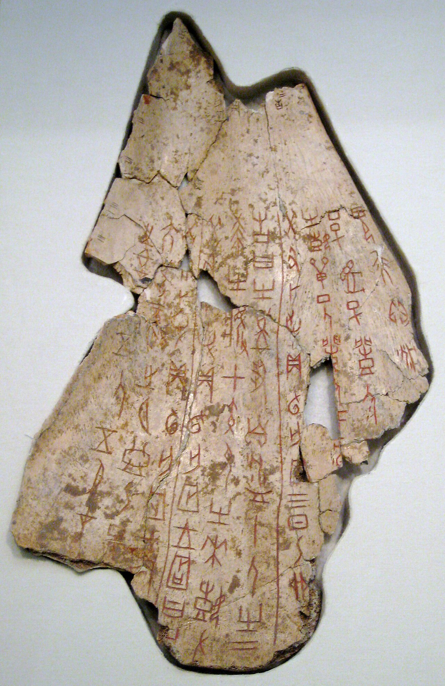

3,000 years ago, Shang kings asked questions to their ancestors by carving them on bones. Read the oldest Chinese writing and find the characters we still use today.
Teams

A real oracle bone: an ox shoulder blade carved about 3,000 years ago.